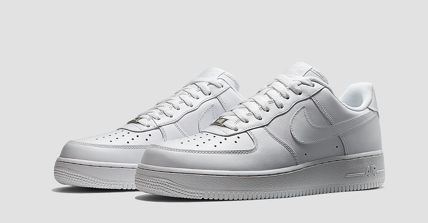

Nike Air Force 1 '07
제품 번호 : 315122-111
1982년 나사 직원의 '농구화에 에어를 넣어 보면 어떨까?' 라는 아이디어에 의해 나이키 에어가 들어간 첫 농구화[1]에어 포스 원이 출시된다. 출시 후 미국 내 선풍적인 인기를 끌었다가 1984년 단종되고 다시 복각되는데 90년대가 되며 세월의 흐름으로 농구화로서의 기능은 퇴색되었지만 힙합 문화에서 큰 인기를 얻게 되고 오늘날 스트릿 패션을 상징하는 신발으로 자리매김한다. 수만은 브랜드와의 협업으로 다양한 종류가 있다.
가격 : 129,000원
발매일 : 상시 발매